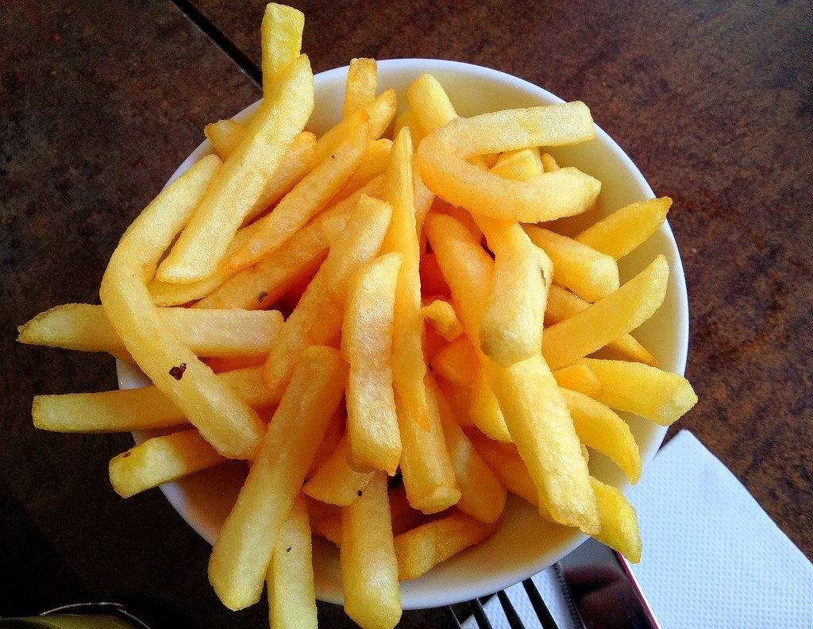

Titulo 1
Mussum Ipsum, cacilds vidis litro abertis. Não sou faixa preta cumpadi, sou preto inteiris, inteiris.Casamentiss faiz malandris se pirulitá.Admodum accumsan disputationi eu sit. Vide electram sadipscing et per.Mé faiz elementum girarzis, nisi eros vermeio. Viva Forevis aptent taciti sociosqu ad litora torquent.Casamentiss faiz malandris se pirulitá.Tá deprimidis, eu conheço uma cachacis que pode alegrar sua vidis.Nec orci ornare consequat. Praesent lacinia ultrices consectetur. Sed non ipsum felis.
Mussum Ipsum, cacilds vidis litro abertis. Suco de cevadiss deixa as pessoas mais interessantis.Suco de cevadiss, é um leite divinis, qui tem lupuliz, matis, aguis e fermentis.Si num tem leite então bota uma pinga aí cumpadi!Paisis, filhis, espiritis santis. Quem num gosta di mim que vai caçá sua turmis!Admodum accumsan disputationi eu sit. Vide electram sadipscing et per.Tá deprimidis, eu conheço uma cachacis que pode alegrar sua vidis.Casamentiss faiz malandris se pirulitá. Leite de capivaris, leite de mula manquis sem cabeça.Interessantiss quisso pudia ce receita de bolis, mais bolis eu num gostis.Suco de cevadiss, é um leite divinis, qui tem lupuliz, matis, aguis e fermentis.Praesent vel viverra nisi. Mauris aliquet nunc non turpis scelerisque, eget. Mé faiz elementum girarzis, nisi eros vermeio.Não sou faixa preta cumpadi, sou preto inteiris, inteiris.Quem num gosta di mim que vai caçá sua turmis!Tá deprimidis, eu conheço uma cachacis que pode alegrar sua vidis. Todo mundo vê os porris que eu tomo, mas ninguém vê os tombis que eu levo!Interessantiss quisso pudia ce receita de bolis, mais bolis eu num gostis.Praesent vel viverra nisi. Mauris aliquet nunc non turpis scelerisque, eget.Mauris nec dolor in eros commodo tempor. Aenean aliquam molestie leo, vitae iaculis nisl.
